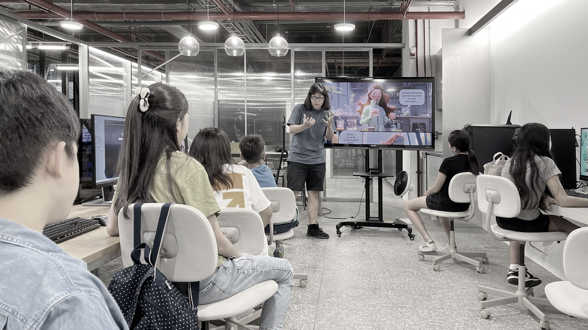
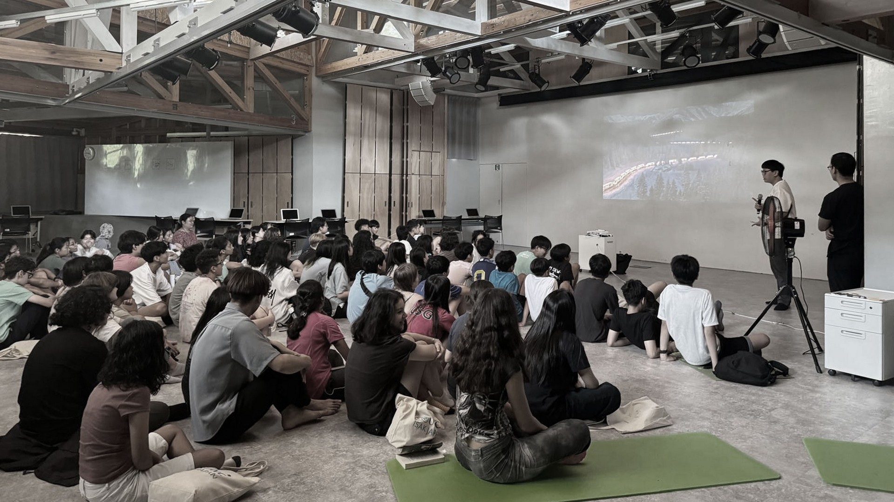

The Origin of ACE
In mid-2023, with support from NVIDIA and ASUS, we partnered with Shih-Chien University’s Communication Design Department (SCCD) to run an experiment we had always wondered about: give top design students 24 hours, one song, and emerging generative AI tools. The results surprised us. Watching those fifteen students create full music videos showed us how far human creativity can go when people lead and AI simply helps them go faster and farther.
It made us think about our own middle-school children. We could already see the risk of over-relying on AI, and we didn’t want them to grow up treating it only as a shortcut. We wanted them to learn how to co-think and co-reason with these tools so AI becomes an amplifier of who they are, not a replacement. That’s when we realized the real gift we could give them wasn’t teaching tools or prompts. Tools will change. What lasts is the mindset. So we brought them the same world-class innovation frameworks used in leading organizations, teaching them to become the conductors who guide the creative process while using AI in whatever way serves their ideas best.

We started small, just workshops for our children and their friends. But the impact spread quickly. Soon we were at UWC ISAK Japan, watching teenagers produce pitches and prototypes with a level of clarity and quality we used to think only came after years in the industry. It was the moment we realized that AI doesn’t just level the playing field. With the right mindset, it can accelerate young people to do real, meaningful work far earlier than we ever imagined.


More people began noticing. Parents told other parents. Teachers shared what they saw. Corporate leaders began asking if we could help their teams too. That was when we understood that ACE was no longer just an experiment for our children. It has grown into a larger mission to make applied creativity a practical skill for anyone who wants to stay relevant, confident, and capable in the age of AI.